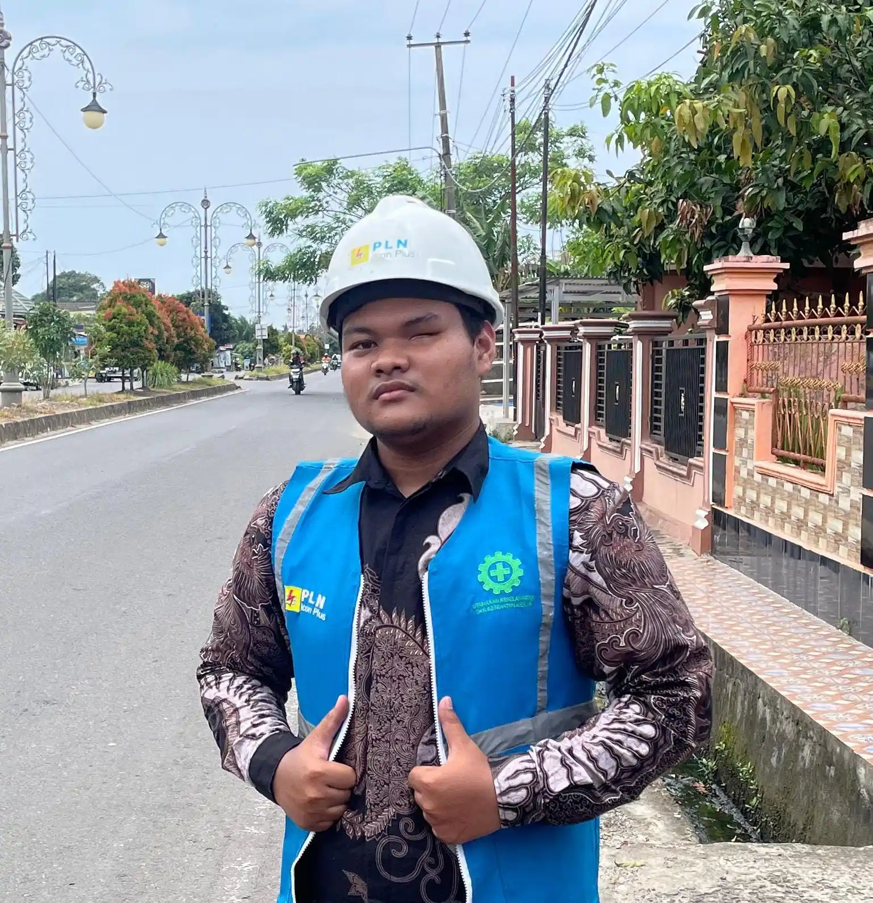

Loading...

Saya seorang |
Saya adalah siswa SMK jurusan Teknik Jaringan Komputer dan Telekomunikasi (TJKT), atau dikenal juga sebagai TKJ. Memiliki minat di bidang jaringan, teknologi, dan komputer. Sedang mengembangkan kemampuan di bidang IT untuk mempersiapkan karier di masa depan.
Merancang prototype IoT penyiram tanaman otomatis yang bisa dikontrol manual via website/aplikasi menggunakan ESP8266 sebagai microcontroller.
Merancang dan memasang jaringan LAN untuk laboratorium komputer sekolah, termasuk konfigurasi perangkat jaringan dan pengkabelan.